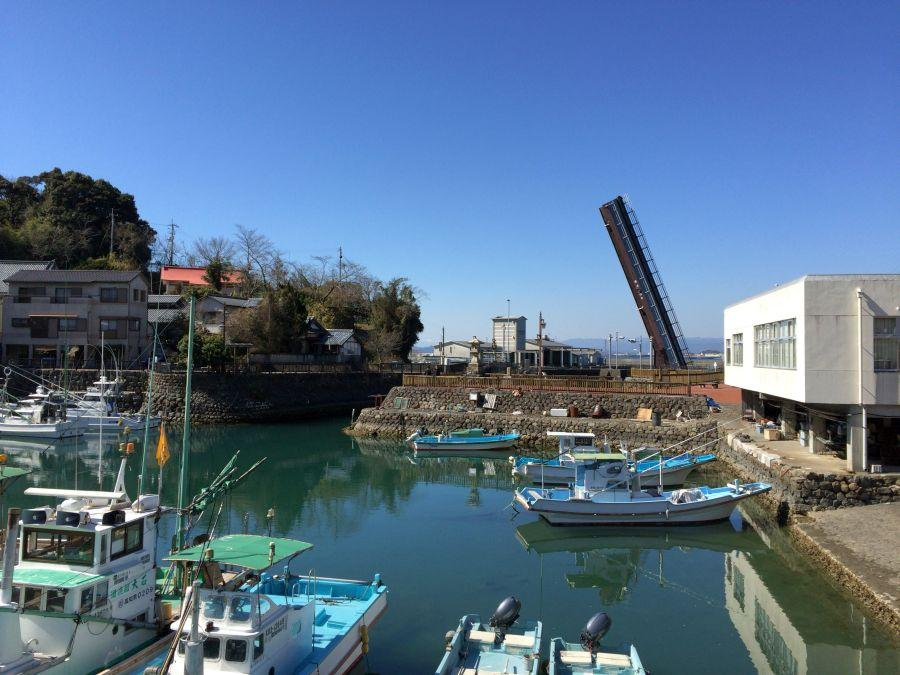

新旧が混在する土佐藩ゆかりの港 < 手結港 / 高知県 >

太平洋から掘り込まれた港と、その入口に まるで空から落下して突き刺さったような 大きな跳ね橋が特徴的な、高知県中部・手結港(ていこう)。
この特異な景観は新旧が混在する場所として、近年注目を集めています。
土佐藩家老・野中兼山という人物
手結港(ていこう / 高知県香南市)
祖母が土佐藩初代藩主・山内一豊(やまうちかつとよ)の妹・合(ごう)という野中兼山(のなかけんざん)は、土佐藩家老として二代藩主・忠義(ただよし)に登用され、土木分野を中心にその功績が伝えられる。
手結港の改修はその一つ。
参勤交代を始め 土佐から国外への移動は険しい山道を避けて(＝陸路) 海路が一般的だったが、外海である太平洋の横断は常に危険と隣り合わせ。海が荒れた際に避難することができる港を確保するべく 港湾の開発に当たったもの。
手結には古くから港があったが、藩政時代当初は 太平洋の荒波や近くを流れる夜須川から運ばれてくる土砂が堆積して 水深が浅くなり、港としては機能していなかった。
工事はまず 港の出入口に突堤を築くことで入口を狭め、土砂流入対策を行った上で進められた。
内部の岩盤を人力で開削して、予め切り分けた石を海から船舶によって運び 石垣として組むことで基礎を固めた。
慶安3年(1650)着工、明暦元年(1655)完成。
この時点で 土砂堆積問題は完全に解決はしておらず、藩では5年に一度 大規模な浚渫(しゅんせつ)を行うことにより 港の保全に努めた。
明治6年(1873)、高知県が手結港改修工事を行う際に 「船の出入りを妨げる」という理由から 突堤の一部切り取った。するとみるみる土砂が堆積して港が使えなくなってしまった。
二百年余りの時を経て野中兼山による漂砂対策の有効性が証明されたエピソードである。その復活は大正4年(1915)の工事まで待たねばならなかった。
手結港は時代時代によって 改修工事が行われてきたが、下部は改修当時のものがそのまま使用されており、基礎部分には 野中兼山によって組まれた古い石垣を見る事ができる。
手結港可動橋

手結港可動橋(ていこうかどうきょう)
建設費約21億yenの巨費を投じて 平成14年(2002)に完成した。跳開している時の角度は70度にもなる。
船舶の出入りをyen滑に行うために、橋は開いている時間の方が長い。一日のうちで7時間程度通行可能。
橋の開閉作業が行われる際は 踏切警報機が鳴り、遮断機が下りる。
渡橋可能時間になり、橋が下り始めました。
ゆっくり、ゆっくり下りて行くこと 作業完了まで約6分。
この特異な景観は、ダイハツ・キャストアクティバのCM「そびえたつ道」に登場。新しい手結港のシンボルになっています。
手結港可動橋
< 自家用車 >
高松駅から 約2時間、137km
高知龍馬空港から 約20分、10km
※ 主な地点からの最速・最短距離